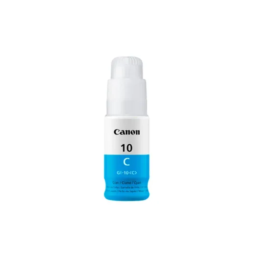
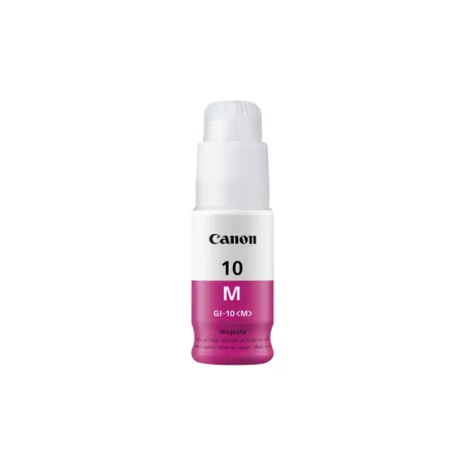
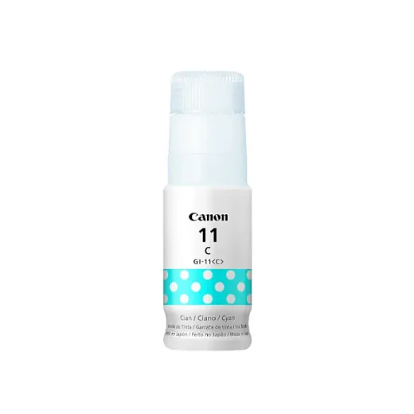
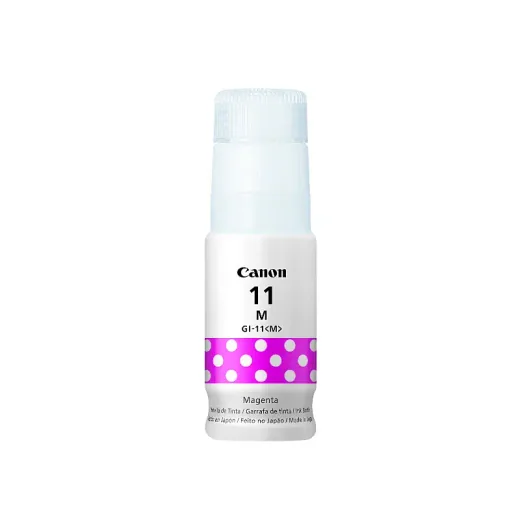
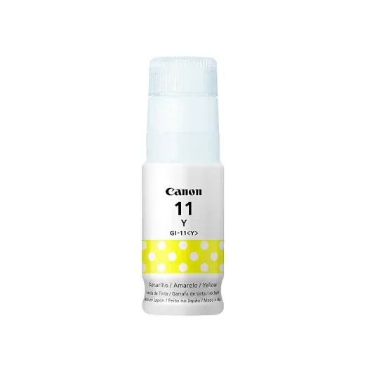
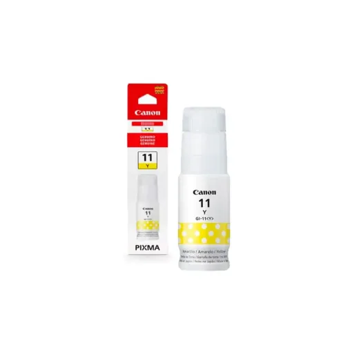
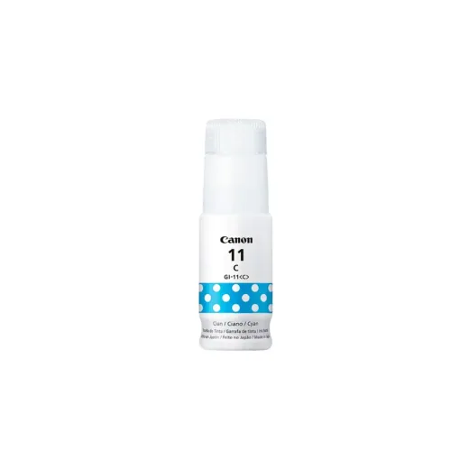
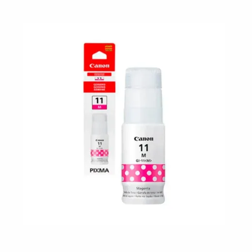

Inicio › Otros de tecnología y hogar

Canon · Modelo GI10C
Bote de Tinta Original Canon GI-10C Cyan
L 402.5
En Sycom
Precio en cada tienda
| Tienda | Precio | Antes | Disponibilidad | |
|---|---|---|---|---|
| Sycom | L 402.5 | — | Disponible | Ver en tienda › |
Precios referenciales tomados de cada tienda el 14 de noviembre de 2026. El precio válido es el que muestra la tienda al comprar.
Otros otros de tecnología y hogar Canon
 Bote de Tinta Original Canon GI-10Y AmarilloL 402.5En Sycom
Bote de Tinta Original Canon GI-10Y AmarilloL 402.5En Sycom
Bote de Tinta Original Canon GI-10M MagentaL 402.5En Sycom
Tinta Canon Gi-11 CyanL 420En Acosa
Tinta Canon Gi-11 MagentaL 420En Acosa
Tinta Canon Gi-11 YellowL 420En Acosa
Bote de Tinta Original Canon GI-11 Amarillo 70ML G2160/G3160 Compatible con GI-20 G3270L 420En Sycom
Bote de Tinta Original Canon GI-11 Cyan 70ML G2160/G3160 Compatible con GI-20 G3270L 420En Sycom
Bote de Tinta Original Canon GI-11 Magenta 70ML G2160/G3160 Compatible con GI-20 G3270L 420En Sycom